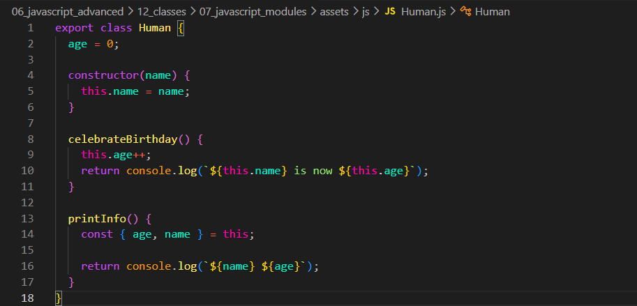
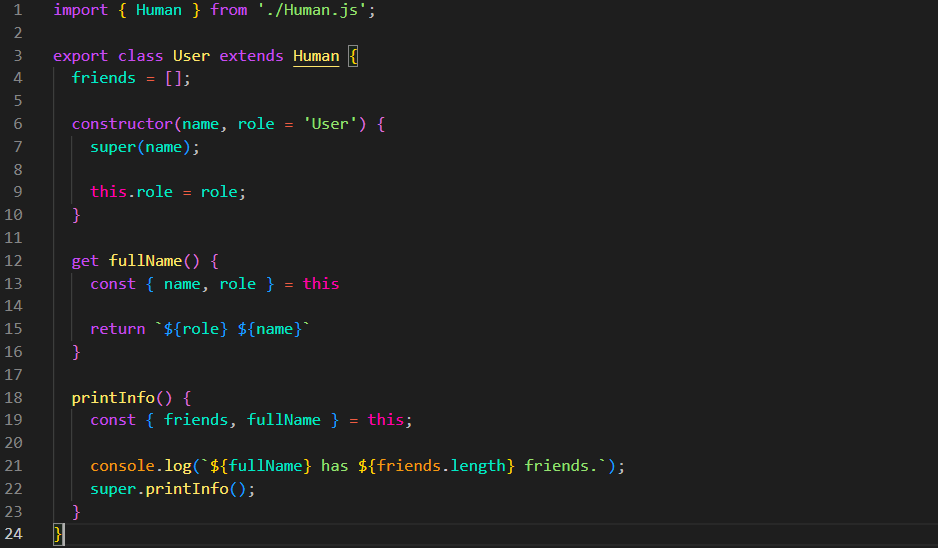
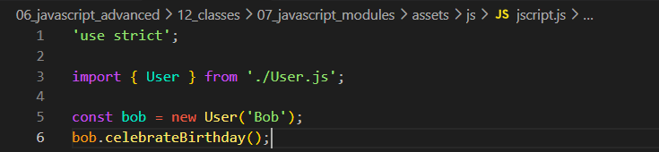
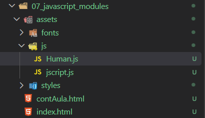
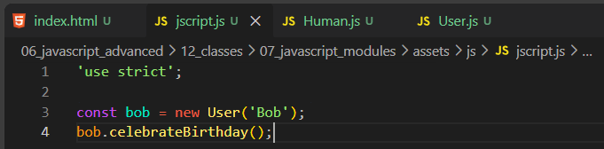
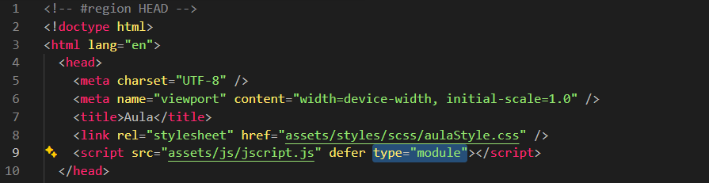

Javascript Modules
Intro
Aqui iremos entender como podemos dividir nosso código JS em diferentes arquivos.
Aqui iremos entender como podemos dividir nosso código JS em diferentes arquivos.
JS:



Anteriormente escrevíamos nosso código JS em um único arquivo. Porém, conforme o código cresce, esse arquivo pode ficar muito grande e difícil de organizar.
Por isso, podemos dividir nosso código em vários arquivos. Cada arquivo pode ficar responsável por uma parte do código.
Por exemplo, podemos colocar uma classe em um arquivo separado.
Poderíamos adicionar todos esses arquivos diretamente no HTML usando várias tags <script>. Porém, existe uma maneira melhor de organizar isso usando módulos.
Com os módulos, podemos fazer um arquivo importar código de outro arquivo.
Primeiro iremos criar um novo arquivo dentro da nossa pasta JS. Quando criamos um arquivo para uma classe, podemos usar o mesmo nome da classe. Por exemplo: Human.js.

Agora iremos criar outro arquivo da mesma forma, mas com o nome User.js.
Agora iremos voltar ao nosso código completo. Podemos recortar a classe Human e colocá-la no arquivo Human.js.
Depois fazemos a mesma coisa com a classe User, colocando-a no arquivo User.js.
Feito isso, a única coisa que ficará no nosso JS principal será o código que utiliza a classe User.
const bob = new User('Bob');
bob.celebrateBirthday();

Agora temos um problema. Nosso arquivo principal precisa usar User, e o arquivo User.js precisa usar Human.
Para permitir que uma classe, função ou variável seja usada por outro arquivo, usamos a palavra export.
Portanto, no nosso arquivo Human.js, adicionamos export antes da classe:
export class Human {
age = 0;
constructor(name) {
this.name = name;
}
celebrateBirthday() {
this.age++;
return console.log(`${this.name} is now ${this.age}`);
}
printInfo() {
const { age, name } = this;
return console.log(`${name} ${age}`);
}
}
O export basicamente diz: "outros arquivos podem importar essa classe".
Agora precisamos pegar a classe Human dentro do arquivo User.js.
Para isso usamos import:
import { Human } from './Human.js';
Aqui estamos dizendo que queremos importar a classe Human que está dentro do arquivo Human.js.
O ./ significa que o arquivo está na mesma pasta do arquivo atual.
Agora podemos usar Human normalmente dentro do User.js:
import { Human } from './Human.js';
export class User extends Human {
friends = [];
constructor(name, role = 'User') {
super(name);
this.role = role;
}
get fullName() {
const { name, role } = this;
return `${role} ${name}`;
}
printInfo() {
const { friends, fullName } = this;
console.log(`${fullName} has ${friends.length} friends.`);
super.printInfo();
}
}
Observe que agora temos duas coisas:
import → pega algo que foi exportado de outro arquivo.
export → permite que algo do arquivo seja usado por outro arquivo.
Como User também será usado pelo nosso arquivo principal, também precisamos colocar export na classe User.
Agora iremos para nosso arquivo principal jscript.js.
Como ele precisa usar a classe User, também precisamos importá-la:
import { User } from './User.js';
const bob = new User('Bob');
bob.celebrateBirthday();
Dessa forma, temos uma sequência:
jscript.js
↓
importa User
↓
User.js
↓
importa Human
↓
Human.js
Assim, os arquivos conseguem utilizar código uns dos outros sem precisarmos colocar tudo em um único arquivo.
Existe mais uma coisa que precisamos fazer.
O navegador precisa saber que nosso arquivo jscript.js está usando módulos.
Para isso, adicionamos o atributo type="module" na tag <script>.
<script src="assets/js/jscript.js" type="module"></script>
Sem o type="module", o navegador não tratará esse arquivo como um módulo e o uso de import e export não funcionará normalmente.
Depois de separar nossos arquivos, podemos entender o funcionamento em quatro passos:
1) Criamos arquivos separados para organizar nosso código.
Por exemplo:
Human.js User.js jscript.js
2) No arquivo que queremos disponibilizar para outros arquivos, usamos export.
export class Human {
// código da classe
}
Nesse caso, estamos permitindo que outros arquivos importem a classe Human.
3) No arquivo que precisa usar essa classe, usamos import.
import { Human } from './Human.js';
Nesse caso, estamos pegando a classe Human que foi exportada pelo arquivo Human.js.
4) No HTML, adicionamos type="module" ao nosso arquivo JavaScript principal.
<script src="assets/js/jscript.js" type="module"></script>

Dessa forma, o navegador entende que o arquivo jscript.js é um módulo e pode utilizar import e export.
export → disponibiliza algo para outro arquivo.
import → pega algo disponibilizado por outro arquivo.
type="module" → informa ao navegador que o JavaScript está usando módulos.
Portanto, podemos pensar assim:
Human.js ↓ export Human User.js ↓ import Human ↓ export User jscript.js ↓ import User
O objetivo dos módulos é simplesmente separar nosso código em arquivos menores e permitir que esses arquivos se comuniquem através de import e export.